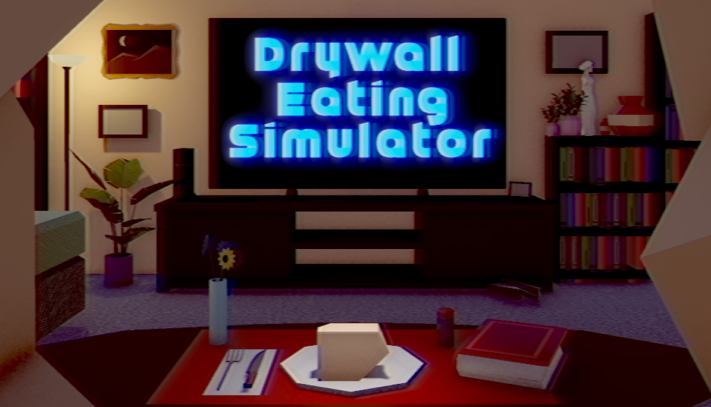
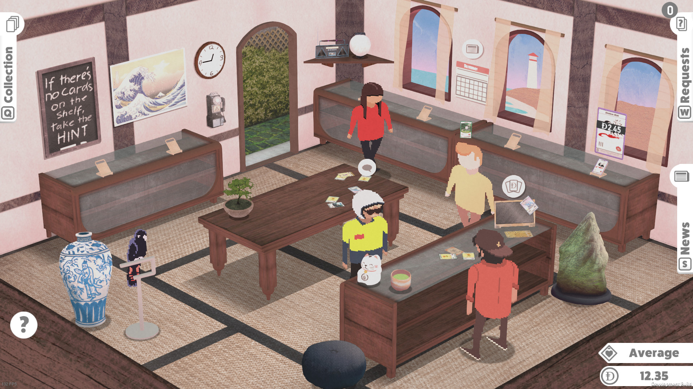
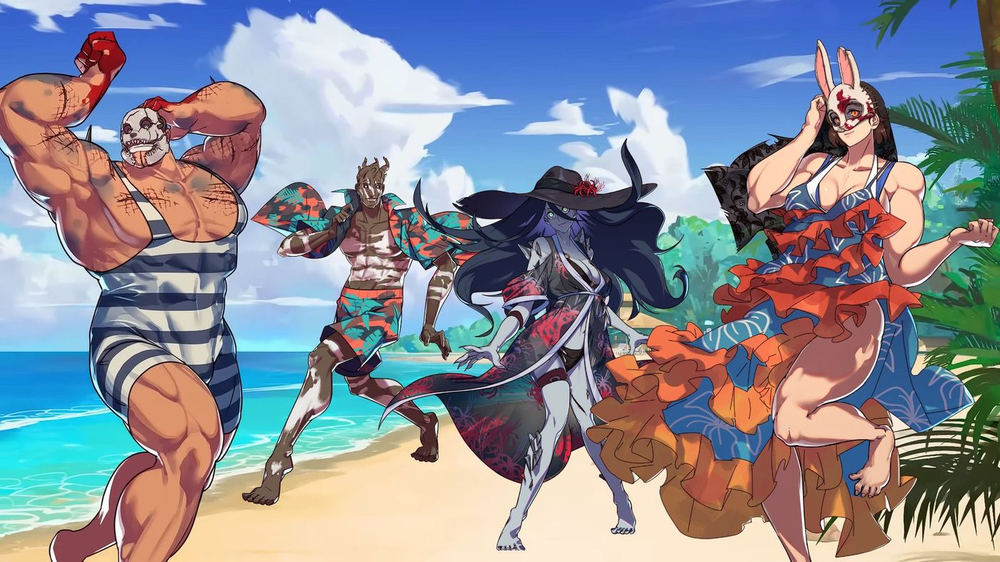
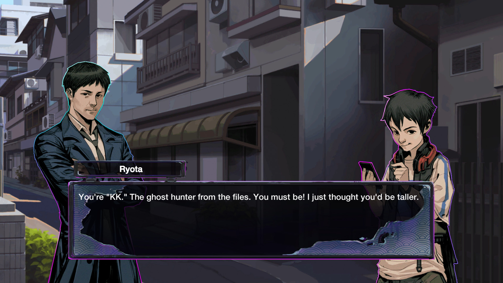
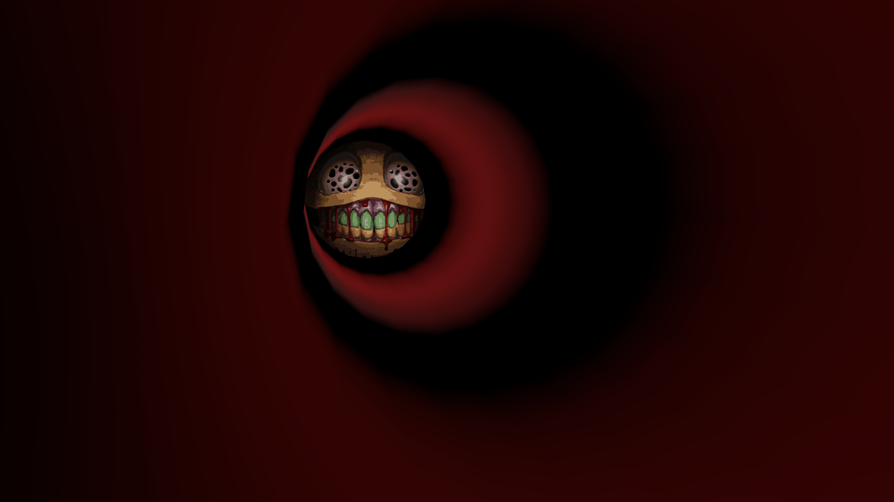
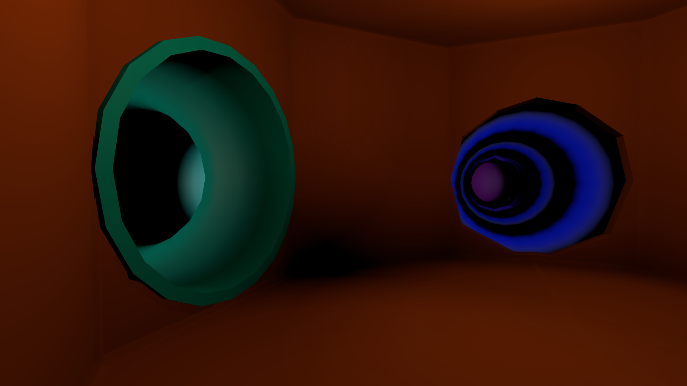
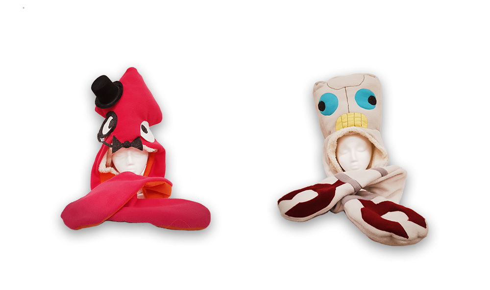

I'm Jax/Joni (they/them pronouns), a creative director and high-level programmer living in upstate New York.
Studio head at Peripheral Playbox. Previously at Akupara Games. 2015 Game Design graduate from Rochester Institute of Technology.
Drywall Eating Simulator (2025 Shipped Title)

A short-form humor physics/adventure game. Self published title under Peripheral Playbox, acting as Project Lead which encompassed programming, designing, and writing. Also managed art and audio team members. Outside of development, also handled bizdev and marketing materials such as trailers for both Summer Games Fest 2025 and The Game Awards 2025 Women-led games showcases.
Hello Cruel World (2024 Shipped Title)

A VR queer horror cyberpunk puzzle game, acted as Creative Director leading a core team of 10 from concept to shipping. Primary role was vision-holder for the creative direction, working with team members across all disciplines. Additional work included rapid prototyping for gameplay systems and features, level and environmental design, and supplemental writing.
Some of the team and I were interviewed for Hey Poor Player about our process and inspirations creating the game.
Kardboard Kings Switch Port (2022 Shipped Title)

Card shop simulator game, published by Akupara and developed by Henry's House. Role was starting off work on the port to the Nintendo Switch, added the SDK to the project, integrated saving/loading and optimized assets to get the first builds. Coordinated and worked with the original devs as they updated and added new content to the game.
Hooked on You: A Dead by Daylight Dating Sim (2022 Shipped Title)

A visual novel dating sim made at Akupara Games in conjunction with Psyop and Behaviour Interactive. A full game where you romance 4 killers from Dead By Daylight, role was adding backend support to various systems. (Saving/loading, graphics optimizations etc.)
Ghostwire: Tokyo - Prelude (2022 Shipped Title)

A visual novel mystery game made at Akupara Games in conjunction with Psyop, as a promotion for Tango Gameworks and Bethesda Softworks title Ghostwire: Tokyo, released in March 2022. Role was assiting with the game's launch, adding support for achievements and various other last-minute bugfixes.
Playmaze Panic (2021 Game Jam Project)


A 3D First Person horror prototype where you navigate a fast food playground while evading a monster. Developed as part of an internal 2020 game jam at Akupara Games, I pitched the concept and was team lead/designer. The game was built over the course of two weeks with a team, with some additional time spent preparing for release on itch.io and GameJolt.
Further info about the development of the game can be found in the blog post or the podcast.
Slap Friends (2016-2017 Festival Winner)

{kind=link}
A 2-player fighting game where players slap each other with cartoon characters. Players control the game by wearing physical costumes with accelerometers tracking movements, allowing actual slap fights with the costumes. I built the game in Unity, and used Arduino for controller software and hardware. Concept, art, and costume creation was by Terence Tolman.
Slap Friends was featured at Alt.Ctrl.GDC 2016, GDC Experimental Gameplay Workshop 2016, and Indiecade 2017.
FlyInside (2018 Shipped Title)
A VR-focused realistic flight simulator. Worked as a generalist C++ programmer at the studio from 2017-2019. Role was mostly adding new features to the sim, and later improving environment generation closer to early-access launch on Steam in 2018.